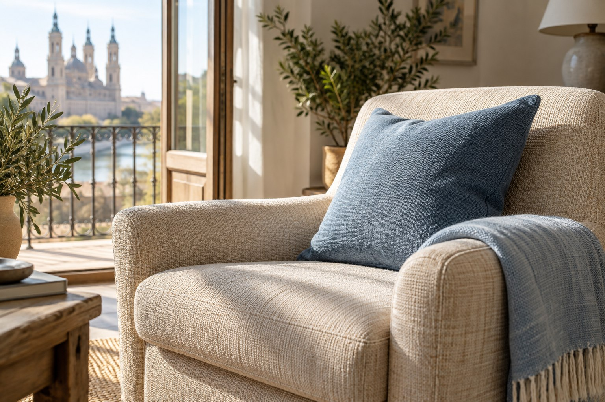
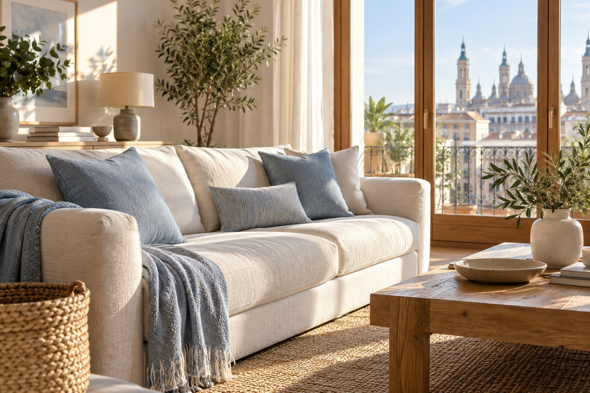

Ejemplo visual ilustrativoSUELOS Y TEJIDOS / 15 DE 16
Tapicerías
Los tejidos también hacen hogar.
Consultar este servicio Consulta sobre limpieza de tapicerías en Zaragoza.PARA EMPEZAR
Los tejidos también hacen hogar.
Sillas, butacas y otras piezas tapizadas tienen materiales y usos diferentes. Antes de hablar de su cuidado, conviene saber qué tejido es y cómo se encuentra.
Este servicio aparece en referencias externas y su disponibilidad debe confirmarse directamente con Lumis. La página sirve para preparar una consulta clara, sin prometer un tratamiento concreto.
Confirma con Lumis la disponibilidad de este servicio antes de considerarlo definitivo.
TU ESPACIO, TU CASOPuede tener sentido
Puede tener sentido
si estás pensando en…
Estas son situaciones orientativas. El alcance concreto se decide al hablar con Lumis.
Butacas y piezas textiles
Mobiliario de uso frecuente

Ejemplo visual ilustrativoPARA PEDIR PRESUPUESTOCuéntanos
Cuéntanos
lo esencial.
No necesitas tenerlo todo resuelto. Estos datos ayudan a empezar con una idea más clara:
- Tipo y número de piezas
- Tejido o etiqueta si está disponible
- Fotos del conjunto y de las zonas relevantes
Comprueba la etiqueta del fabricante antes de intervenir y evita probar productos en un área visible. Algunas fibras requieren cuidados especiales.
MIRA MÁS DE CERCAEl espacio
El espacio
en imágenes.
Ejemplos visuales creados para esta demostración. No son fotografías de trabajos realizados por Lumis.

PREGUNTAS FRECUENTESResolvamos
Resolvamos
tus dudas.
Y si tu caso no aparece aquí, cuéntanoslo directamente.
¿Lumis ofrece este servicio?
Consulta su disponibilidad directamente con Lumis antes de darla por confirmada.
¿Debo identificar el tejido?
Si tienes etiqueta o información del fabricante, compártela. Si no, envía una fotografía.
¿Puedo consultar varias piezas?
Sí. Indica cuántas son y si tienen tejidos distintos.